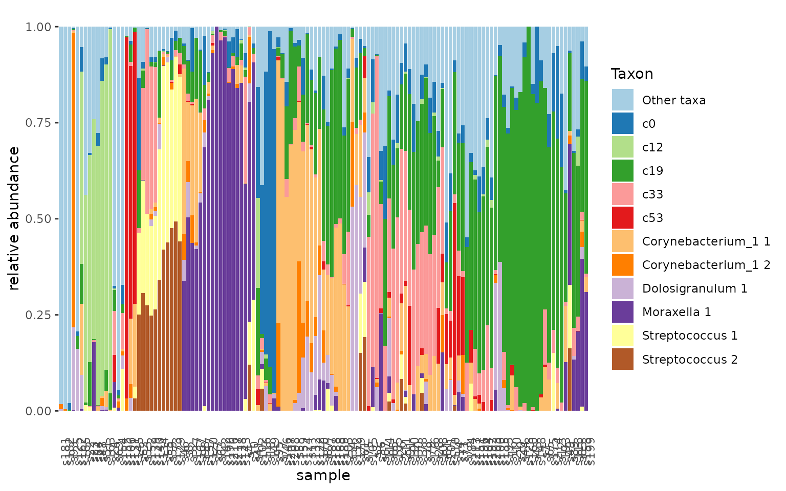

suppressMessages({
library(tidyverse)
library(tidytacos)
})
urt.nf <- urt %>%
filter_samples(location == "NF") %>%
add_taxon_name() This is a brief guide on how to perform network analysis on microbiome count data using a similar strategy as performed in the Isala study using tidytacos.
The method clusters taxa based on their co-occurrence patterns across the samples.
As per usual the test dataset used is a human microbiome samples from the upper respiratory tract (URT), taken from this paper by De Boeck et al. It contains nose as well as nasopharynx samples. Most samples were taken using a swab method, but a minority was taking with the aspirate method.
Step 1: Creating a network
The first step in the analysis is creating a sparcc network from our taxonomic counts. For this the SpiecEasi package is used.
devtools::install_github('zdk123/SpiecEasi')
#> Using github PAT from envvar GITHUB_PAT. Use `gitcreds::gitcreds_set()` and unset GITHUB_PAT in .Renviron (or elsewhere) if you want to use the more secure git credential store instead.
#> Skipping install of 'SpiecEasi' from a github remote, the SHA1 (5f396da8) has not changed since last install.
#> Use `force = TRUE` to force installation
urt.net <- urt.nf %>%
network(
min_occurrence = 0.05, # the minimum percentage of samples that needs to have a taxa for it to be included in the network
iter=20, # number of iterations of the outer loop of sparcc
inner_iter=10, # number of iterations of the inner loop of sparcc
th=0.1, # correlations beneath this threshold are set to 0
taxon_name=taxon_name)
# The network object is a list with two elements:
urt.net$Cor %>% head(2)# Correlation matrix
#> [,1] [,2] [,3] [,4] [,5] [,6]
#> [1,] 1.00000000 -0.02524695 -0.01552901 -0.03171842 0.09544801 0.143588072
#> [2,] -0.02524695 1.00000000 0.02934262 -0.07857665 0.06765017 -0.009489935
#> [,7] [,8] [,9] [,10] [,11] [,12]
#> [1,] 0.03644119 -0.08471946 0.12192287 0.04053017 -0.06917567 -0.003506225
#> [2,] -0.08508984 -0.08653894 0.03876906 0.01651662 0.06864132 0.089922900
#> [,13] [,14] [,15] [,16] [,17] [,18]
#> [1,] 0.02374862 0.03737169 -0.014999820 0.032289844 0.01438234 0.290391607
#> [2,] 0.05099201 -0.01461628 0.003318317 0.003390467 0.01904584 -0.006191043
#> [,19] [,20] [,21] [,22] [,23] [,24]
#> [1,] -0.07507139 0.03193388 -0.028800253 -0.0269450 0.0459296920 0.02051322
#> [2,] -0.06931048 0.11349652 -0.005801705 0.1440292 -0.0007394385 0.04477989
#> [,25] [,26] [,27] [,28] [,29] [,30]
#> [1,] -0.03510921 -0.01605484 0.02184951 -0.07460199 -0.08203290 -0.04744806
#> [2,] 0.12526855 -0.03840095 0.02314976 0.04915654 0.04527458 0.04237467
#> [,31] [,32] [,33] [,34] [,35] [,36]
#> [1,] -0.02054639 -0.006451647 0.171957897 -0.05265209 -0.06367991 0.05538109
#> [2,] 0.13385322 0.139244751 -0.004806322 -0.04940956 -0.05110263 0.01995207
#> [,37] [,38] [,39] [,40] [,41] [,42]
#> [1,] 0.02803822 0.237598156 -0.1405721 0.259967358 0.309066757 0.01689328
#> [2,] -0.10703547 0.004597446 0.1247192 -0.007558909 -0.001020255 0.01836232
#> [,43] [,44] [,45] [,46] [,47] [,48]
#> [1,] -0.12756669 0.01505812 -0.09988763 -0.03801322 -0.05731305 -0.03041158
#> [2,] -0.03709878 0.02054063 -0.06306423 -0.01127914 -0.04370676 -0.01134014
#> [,49] [,50] [,51] [,52] [,53] [,54]
#> [1,] -0.09702030 0.02005934 0.02479451 -0.02073543 -0.04857808 -0.02546164
#> [2,] -0.01701239 0.08242371 -0.01204224 -0.09425654 0.03434584 -0.04627290
#> [,55] [,56] [,57] [,58] [,59] [,60]
#> [1,] -0.002392656 0.11643402 0.006379619 0.1277561 -0.001400398 0.038963000
#> [2,] -0.016995057 0.03092013 -0.003557242 0.1347546 0.058118232 0.007334931
#> [,61] [,62] [,63] [,64] [,65] [,66]
#> [1,] 0.04839159 -0.05861671 -0.04626850 -0.07373187 -0.05166228 0.03280505
#> [2,] 0.06029257 -0.07405251 -0.07311279 -0.08921274 -0.01882911 -0.04549752
#> [,67] [,68] [,69] [,70] [,71] [,72]
#> [1,] -0.06258430 0.01512026 -0.05475789 -0.14823561 -0.01791179 -0.03303570
#> [2,] 0.09429178 -0.02989222 -0.01011144 -0.05985494 0.06102731 0.08736784
#> [,73] [,74] [,75] [,76] [,77] [,78]
#> [1,] 0.0008227056 -0.0006457398 0.06411731 0.03257453 0.02160487 0.12194905
#> [2,] -0.0031126906 0.0283958558 0.06341704 0.09547077 -0.02308406 -0.04586795
#> [,79] [,80] [,81] [,82] [,83] [,84]
#> [1,] 0.38425339 -0.015747224 0.031754149 -0.12514219 0.02948377 0.05926667
#> [2,] 0.04213167 0.004094705 0.003941976 0.05803059 0.04308048 0.12770566
#> [,85] [,86] [,87] [,88] [,89] [,90]
#> [1,] -0.01969408 0.08980989 -0.01645518 -0.08180854 0.02532744 0.05011851
#> [2,] 0.05057223 0.03948814 0.01386722 -0.08785863 -0.04104904 0.03557585
#> [,91] [,92] [,93] [,94] [,95] [,96]
#> [1,] 0.01143762 -0.02961427 -0.03572028 0.03400519 -0.02975903 -0.02152658
#> [2,] -0.03073492 0.13990949 -0.07839808 -0.06720141 0.01115880 -0.07182995
#> [,97] [,98] [,99] [,100] [,101] [,102]
#> [1,] 0.022413000 -0.002887255 -0.17685222 -0.06874981 -0.06877876 0.14215629
#> [2,] -0.004528728 -0.086783520 -0.04369869 -0.02815099 -0.19228190 -0.04474381
#> [,103] [,104] [,105] [,106] [,107] [,108]
#> [1,] -0.032254739 -0.01975727 -0.08913028 -0.02910521 -0.003617923 0.006148134
#> [2,] 0.005302461 -0.09243463 -0.01562426 -0.06248243 -0.124264923 -0.108757751
#> [,109]
#> [1,] -0.06108559
#> [2,] -0.12540969
# urt.net$Cov (covariance matrix)
# urt.net$names (names of the taxa on x and y-axes)Step 2: Filtering the network matrix
Next up we filter the output correlation matrix to remove weak
correlations. For this we use the filter_network function,
which has the Matrix package as a dependency. We also
install the igraph package, which can be used for the
visualization of the network.
install.packages("Matrix")
install.packages("igraph")We remove weak correlations (here set to an absolute value of
<=0.1) and remove the diagonal. This is all handled with the
filter_network function.
urt.net.filt <- urt.net %>% filter_network(threshold = 0.1)Step 3: Clustering of the network
Now the taxa in the network are clustered using an unsupervised
clustering algorithm, the Markov
Cluster Algorithm (MCL). The cluster_network function
has the MCL package as a dependency. The algorithm cannot
handle negative interactions so any correlation <0 will be set to
0.
install.packages("MCL")
urt.net.clust <- urt.net.filt %>%
cluster_network(min_n=5, visualize=T)
urt.net.clust %>%
group_by(cluster) %>%
summarize(n=n())
#> # A tibble: 5 × 2
#> cluster n
#> <chr> <int>
#> 1 c0 41
#> 2 c12 8
#> 3 c19 8
#> 4 c33 21
#> 5 c53 11Using the new clustered taxa (“eigentaxa”) we can visualize the clusters in the microbiome profile.
urt.nf$taxa <- urt.nf$taxa %>%
left_join(urt.net.clust, by=c("taxon_name"="taxon"))
urt.nf <- urt.nf %>%
add_taxon_name() %>%
mutate_taxa(cluster= ifelse(is.na(cluster), taxon_name, cluster)) %>%
set_rank_names(c("cluster")) %>%
aggregate_taxa(rank="cluster")
urt.nf %>% tacoplot_stack()
urt.net.clust %>% filter(cluster == unique(urt.net.clust$cluster)[[4]])
#> # A tibble: 21 × 2
#> taxon cluster
#> <chr> <chr>
#> 1 Alloprevotella 3 c33
#> 2 Campylobacter 2 c33
#> 3 Fusobacterium 5 c33
#> 4 Gemella c33
#> 5 Granulicatella 1 c33
#> 6 Granulicatella 2 c33
#> 7 Haemophilus 3 c33
#> 8 Leptotrichia 1 c33
#> 9 Megasphaera 1 c33
#> 10 Neisseria 2 c33
#> # ℹ 11 more rowsHere cluster c33 and its composition are displayed.